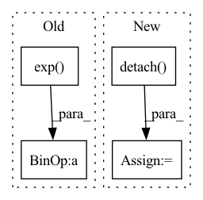

Pattern ID :25402

Before Change
recons_loss = ((recons - input) ** 2).flatten(1).mean(-1)
E_log_q_z = torch.sum(-0.5 * (log_var + (z - mu) ** 2)/ log_var.exp(),
dim = 1)
E_log_p_z = torch.sum(-0.5 * (z ** 2), dim = 1)
// Get importance weights
log_weight = (recons_loss + E_log_q_z - E_log_p_z).detach().data
weight = F.softmax(log_weight, dim = 0)
kld_loss = torch.mean(E_log_q_z - E_log_p_z, dim = 0) //torch.mean(-0.5 * torch.sum(1 + log_var - mu ** 2 - log_var.exp(), dim = 1), dim = 0)
After Change
E_log_p_z = torch.sum(-0.5 * (z ** 2) - 0.5 * torch.log(2 * pi), dim = 1)
// Get importance weights
log_weight = (recons_loss + E_log_p_z - E_log_q_z).detach().data
weight = F.softmax(log_weight, dim = 0)
kld_loss = torch.mean(E_log_q_z - E_log_p_z, dim = 0) //torch.mean(-0.5 * torch.sum(1 + log_var - mu ** 2 - log_var.exp(), dim = 1), dim = 0)
In pattern: SUPERPATTERN
Frequency: 3
Non-data size: 4
Instances
Fragment ID: 77621971
Project Name: antixk/pytorch-vae
Commit Name: f70272dd480b4984d3f46eeb957ae39de07f950b
Time: 2020-01-20
Author: anandkrish894@gmail.com
File Name: models/iwae.py
M Class Name: IWAE
N Class Name: IWAE
M Method Name: loss_function(1)
N Method Name: loss_function(1)
M Parent Class: BaseVAE
N Parent Class: BaseVAE
M File Name: models/iwae.py
N File Name: models/iwae.py
M Start Line: 130
M End Line: 143
N Start Line: 133
N End Line: 146
'>
Before Change
R_tgt_src = out["R"][0, -1, :2, :2]
t_st_in_t = out["t"][0, -1, :2, :]
error = tgt_p - (R_tgt_src @ src_p + t_st_in_t)
mah = torch.sqrt(torch.sum(error * error * torch.exp(out["match_weights"][-1]), dim=0).squeeze())
error2_sqrt = torch.sqrt(torch.sum(error * error, dim=0).squeeze())
plt.imshow(radar, cmap="gray")
After Change
scores = out["scores"][-1]
if scores.size(0) == 3:
scores = scores[1] + scores[2]
scores = scores.squeeze().detach().cpu().numpy()
plt.imshow(scores, cmap="inferno")
plt.colorbar()
plt.title("log det weight (weight score vis)")
'>
Fragment ID: 77621978
Project Name: utiasasrl/hero_radar_odometry
Commit Name: c1043c84c77f1a20b667d981d4cd286cb378c71a
Time: 2021-01-25
Author: david.yoon@robotics.utias.utoronto.ca
File Name: utils/vis.py
M Class Name: AnonimousClass
N Class Name: AnonimousClass
M Method Name: draw_batch_steam(3)
N Method Name: draw_batch_steam(3)
M Parent Class:
N Parent Class:
M File Name: utils/vis.py
N File Name: utils/vis.py
M Start Line: 55
M End Line: 134
N Start Line: 95
N End Line: 122
'>
Before Change
:param logvar: (Tensor) Standard deviation of the latent Gaussian
:return:
std = torch.exp(0.5 * logvar)
eps = torch.randn_like(std)
return eps * std + mu
def forward(self, input: Tensor, **kwargs) -> Tensor:
mu, log_var = self.encode(input)
After Change
:return:
// Sample from Gamma to guarantee acceptance
alpha_ = alpha.clone().detach()
z_hat = Gamma(alpha_ + self.B, 1).sample()
// Compute the eps ~ N(0,1) that produces z_hat
eps = self.inv_h_func(alpha + self.B , z_hat)
z = self.h_func(alpha + self.B, eps)
// When beta != 1, scale by beta
return z / beta
'>
Fragment ID: 77621964
Project Name: antixk/pytorch-vae
Commit Name: 869b2c5c9da8b5eafa2bf9a74fff4b48b1dc1c51
Time: 2020-01-23
Author: anandkrish894@gmail.com
File Name: models/gamma_vae.py
M Class Name: GammaVAE
N Class Name: GammaVAE
M Method Name: reparameterize(3)
N Method Name: reparameterize(3)
M Parent Class: BaseVAE
N Parent Class: BaseVAE
M File Name: models/gamma_vae.py
N File Name: models/gamma_vae.py
M Start Line: 108
M End Line: 110
N Start Line: 115
N End Line: 123